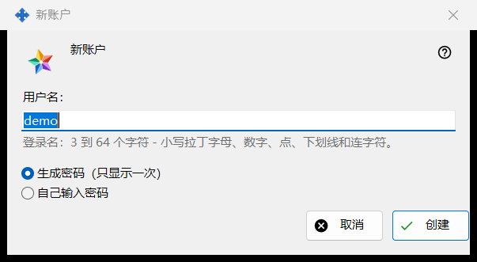
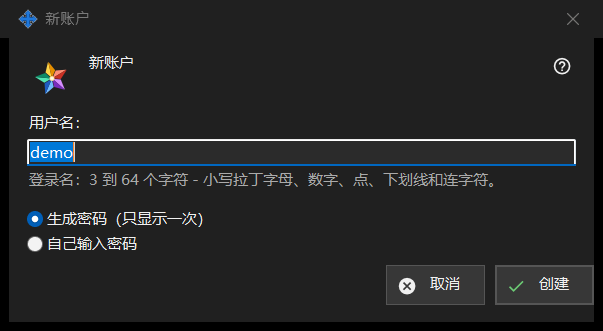

新账户
用途说明
一个窗口，两种模式。「新账户」向您运行的 Media Exchange Server 添加账户；「重置密码：<登录名>」为现有账户设置新密码。它们分别从 Share Manager 设置中 Media Exchange Server 页面账户列表下方的「添加账户..」和「重置密码..」按钮打开；重置需要先选中一个账户。


操作顺序
- 在添加模式下输入登录名。
- 选择密码的生成方式。
- 在重置模式下决定是否让该账户的所有设备登出。
- 点击「创建」或「重置」。
- 从下一个窗口复制生成的密码，或输入您自己的密码。
界面元素
首个账户的声明
创建最初的第一个账户时，窗口以「创建第一个账户之前，请阅读服务器运营者能看到什么：」开头，下方是显示声明的只读框。之后的账户以及重置都不显示它。
登录名
仅限添加模式。3 到 64 个字符：小写拉丁字母、数字、点、下划线和连字符；大写字母会自动转为小写。在文本还不能作为登录名时，提示显示为警告色，「创建」在此之前不会继续。
密码的生成方式
「生成密码（只显示一次）」是默认选项：程序生成符合规则的随机密码，并在下一个窗口中仅显示一次。「自己输入密码」会打开「账户密码」窗口，其中一行实时提示还缺少什么：至少 10 个字符，含一个大写和一个小写拉丁字母以及一个数字。
登出所有设备
仅限重置模式。「同时立即登出此账户的所有设备」默认已勾选。此时结果行会说明密码已更改，且该账户的所有设备已登出；不勾选时，结果行只说明密码已更改。
服务器接受之后
结果行会说明账户已创建。生成的密码只在单独的窗口中出现一次，窗口中有「复制密码」和「设置我自己的密码..」，后者会回到重置模式并选中手动输入。如果开启了「在此电脑上保存账户密码」，密码也会保存在这台电脑上，该账户会出现「显示密码..」按钮。如果此版本提供交换客户端功能，且这台电脑还没有自己的账户，它会用这个密码作为该账户的第一台设备登录。